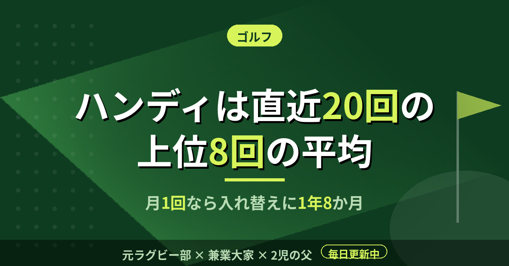

ゴルフハンディは直近20回の上位8回の平均。月1回なら入れ替えに1年8か月
月1〜3回ラウンドしていると、自分の腕前を数字でどう言えばいいのか、時々わからなくなる。練習は週2〜3回の時期もあったが、スコアは良い日も悪い日もある。その揺れを、公式のハンディキャップはどう扱っているのか。日本ゴルフ協会（JGA）のプレーヤー向け資料で調べた。シーズン中の月3回と、閑散期の月1回とでは、数字の鮮度も違うはずだ。
直近20スコアのうち、良い方の8つを使う
資料によれば、ハンディキャップインデックスは直近20スコアのうち、最も良い8スコアのスコアディファレンシャルの平均で決まる。スコアディファレンシャルは、調整グロススコアからコースレーティングなどを引き、113をスロープレーティングで割った値を掛けて出す。コースの難しさを揃えて比べるための式である。
つまり、悪かった12回は計算から外れる。ベストスコアではなく、調子のいい日の平均に近い。自分の実力を少し甘く見積もる数字とも言えるが、コースやティーが違っても同じ物差しで比べられる。
急に上達した日には、別の調整も入る。インデックスより7.0〜9.9打良い例外的なスコアは、スコアディファレンシャルが1.0、10.0打以上良ければ2.0引かれる。上達が数字に早く反映されるようにするための仕組みである。
54ホールで発行され、上限は54.0
インデックスを初めて取得するには、9ホールまたは18ホールのスコアを合計54ホール分、つまり18ホールなら3ラウンド分提出する。54ホール分が揃うと、翌日に発行される。取得前の1ホールの最大スコアはパー＋5打とされている。
数字には上限もあり、54.0である。どれほど苦手でも、数字はこの上限で止まる。9ホールのスコアは別の9ホールと組み合わされ、正当な理由で一部のホールを回れなくても、14ホール以上プレーしていれば18ホール分のスコアが作られる。
月1回なら、入れ替わりに20か月かかる
ここからは資料の数字を使った僕の計算である。20スコアが全部入れ替わるには、月1回なら20か月、月3回でも約7か月かかる。月1回ペースだと、1年8か月前のスコアがまだ計算に残っていることになる。
一方で、調子が落ちても数字は急に悪くならない。直近20スコアの上位8つの平均が、過去1年間の最も低いインデックスより3.0を超えて上がる場合、超えた分は半分に抑えられる。5.0を超える上昇は認められない。ケガなどの事情があれば、ハンディキャップ委員会がこの制限を外すこともできる。
練習場でいくら打っても、スコアが提出されなければ数字には入らない。動かすのは、スコアカードを出したラウンドだけである。
僕はこれまで、ゴルフを「その日のスコア」でしか見ていなかった。月1〜3回のペースで続けるなら、数字は日ごとの出来ではなく、1年から2年の平均を映すものだと考えた方がいい。数字はゆっくり動く。だから、1回のスコアに一喜一憂せず回ればいい。
この記事は note にも掲載しています。